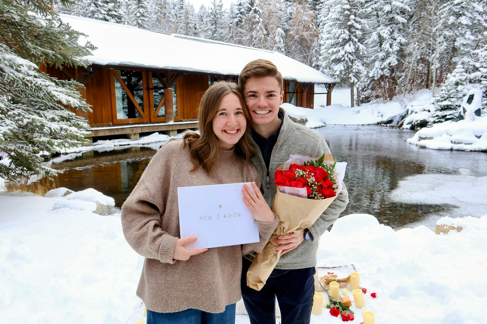

How We Met
Sage and Adam both served LDS missions in the Korea Seoul Mission from 2021 - 2023. It was in Korea that they first met and became aquainted with each other although due to the nature of missions and the fact that they did not serve closely to each other, they did not really get to know one another.
After returning from their missions in January of 2023, both Sage and Adam started school at BYU in May of that year. They also both started working at the Missionary Traning Center. Adam as a HR Assistant and Sage as a Korean Language Teacher.
During Spring Term, Adam and Sage began hanging out in a larger friend group, all of whom served in Korea. It was through working at the MTC and these group hang outs that Adam and Sage started to notice one another. They began talking outside of these group hang outs and eventually went out on an official date.
Dating
Adam and Sage's first date was to Rockwell Ice Cream. Their date went very well and they talked and got to know each other well into the evening. This ice cream date was followed by other dates including; coookie making, watching a movie, going to a museum, and eating out with friends.
On June 1st, Adam and Sage went out to a nice dinner at The Block restaurant in Provo Utah. That night they decided that they liked each other so much they would become official.
After officially becoming boyfriend and gilrfriend, Adam and Sage continued to go on lots of dates. They also began spending more time together and shortly after they started officially dating they met each others families.
The Engagement
After seven months of dating, Adam and Sage had made up their minds that they were so in love with each other and that they knew that they wanted to be married.
 On January 7th 2024 Adam proposed to Sage at Sundance ResortReturning to the place where they first said "I love You" and with the help of some friends, Adam surprised Sage with a book he had made. This book detailed many (but not all) the reasons that he knew he wanted to marry Sage. After having her read through the book, Adam got down on one knee and asked Sage to marry him.
She said "YES!"
Now as they prepare for their wedding, their love for each other only grows stronger with each passing day.